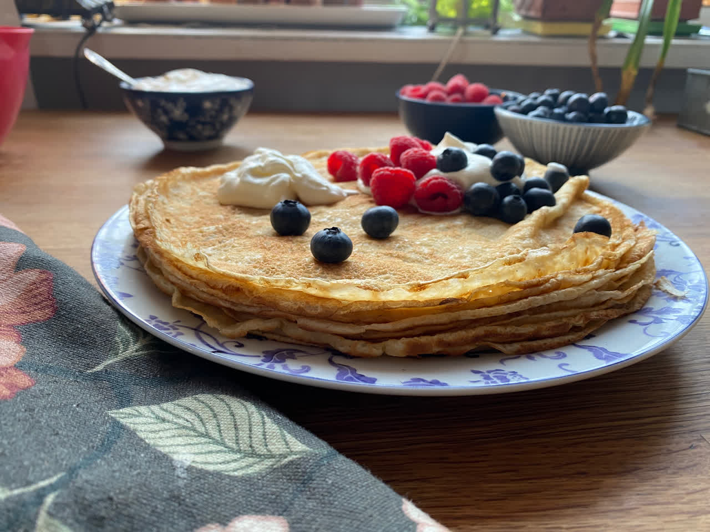
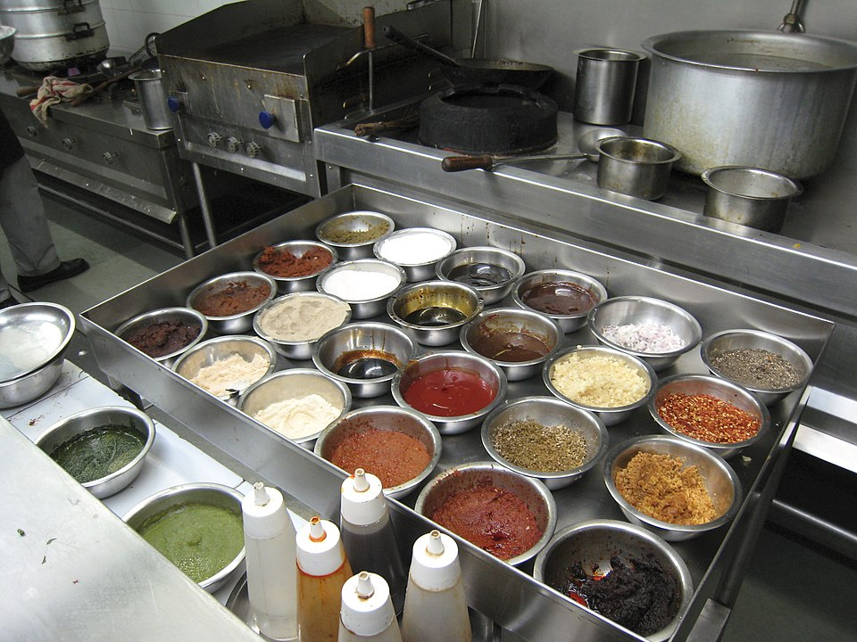
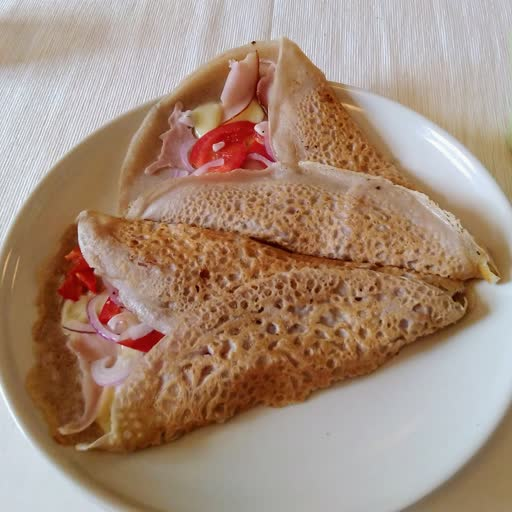

Enkelt recept på pannkakor
Gör traditionella tunna pannkakor med detta enkla och goda pannkaksrecept.

Gör traditionella tunna pannkakor med detta enkla och goda pannkaksrecept.

Utmana dig med detta överdrivna pannkaksrecept.
Ge oss era tjocka, era fluffiga, era högt staplade pannkakor som längtar efter att bli uppäten!

Prova en klassiker från Bretagne, dessa krispiga bovetepannkakor med ägg, ost och skinka.
Birth control, Ho Chi Minh, Richard Nixon back again, Moonshot, Woodstock, Watergate, punk rock!
Fira vinterns slut med dessa boveteplättar serverad med kaviar, smetana och lök.
お好み焼き（おこのみやき）は、小麦粉と鶏卵、キャベツ、ソースなどを使用する鉄板焼きの一種である。
Gör en supergod pannkaka med smak av kardemumma. Servera med katrinplommon och grädde.
김치전 또는 김치부침개는 잘게 썰어낸 김치를 밀가루와 달걀, 물로 만든 반죽과 함께 섞어 기름을 두른 팬에 부친 전이다.
Starta dagen på rätt sätt med irlandska raggmunkar, serverad med grov senap och fläsk.
Trött på semlor? Ät upp din fettmat före fastan med dessa engelska pannkakor, socker och citron.
Apple rings, pancake batter and sausage. Pretty good? Wait 'til you try it!